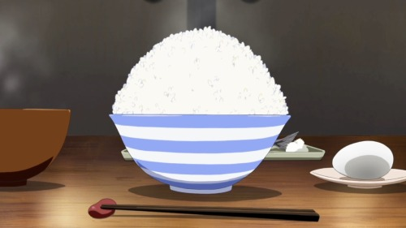
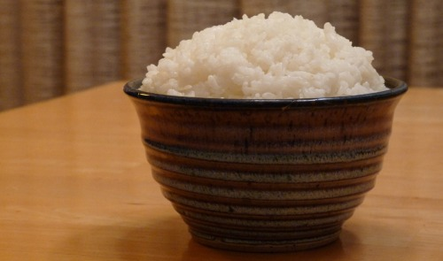

Rice Bowl
I know, I know, a little lackluster after that last recipe, but it needed to be done. Rice is such a staple of Japanese culinary culture, it’s hard to see a meal without it. And as much as I tend to ignore it, there is a proper way to cook rice. If you have the time, you really should cook rice this way. There’s nothing wrong with just popping rice into a pot with some water, and turning the stove on, but the difference when you cook it this way is definitely noticeable (as my roommate will adamantly say). Because so many dishes you find in Japan and in anime use rice, this is a really good guide to refer back to for cooking it (as I intend to do in future recipes–the main reason why I’m putting this here).
Ingredients:
- Short grain white rice (Sometimes, I’m out of short grain and just use medium grain white rice, but short grain is preferable. Don’t use long grain, unless the recipe specifically calls for it)
- Water
Instructions:
- Rinse the rice. You’ll need to do this several times. Just put the rice (for most dishes, I use 1 cup of rice) into a bowl, add some water, and stir it around with your hands. You’ll notice the water ends up kind of murky–that’s all just starch. Then, strain the rice, and rinse it again. Keep doing this until the water gets to be mostly clear.
- Strain the rice once last time, and place it in the pot you’ll be cooking it in (unless you are using a rice cooker, then just leave it in the bowl). Add two times the amount of water as there is rice–for example, 1 cup of rice means 2 cups of water, 1 ½ cups of rice means 3 cups of water. Then just let the rice soak in there for at least a hour.
- Now we cook the rice! If you’re using a rice cooker, just put the rice and water into the rice cooker and set to cook. If not, were going to use the 5-5-5 rule to cook it:
- Turn the stove top up to high and let the water come to a boil. Once it does, turn the heat down to medium, and let it sit there for 5 minutes.
- Turn the heat down to very low, and let it sit there for 5 minutes.
- Then, turn the stove top off, and let it sit for another 5 minutes.
- If the rice is still a little too moist, stir the rice a bit, and then put the rice back on low heat without the lid for a few more minutes, until the rice is to your liking.